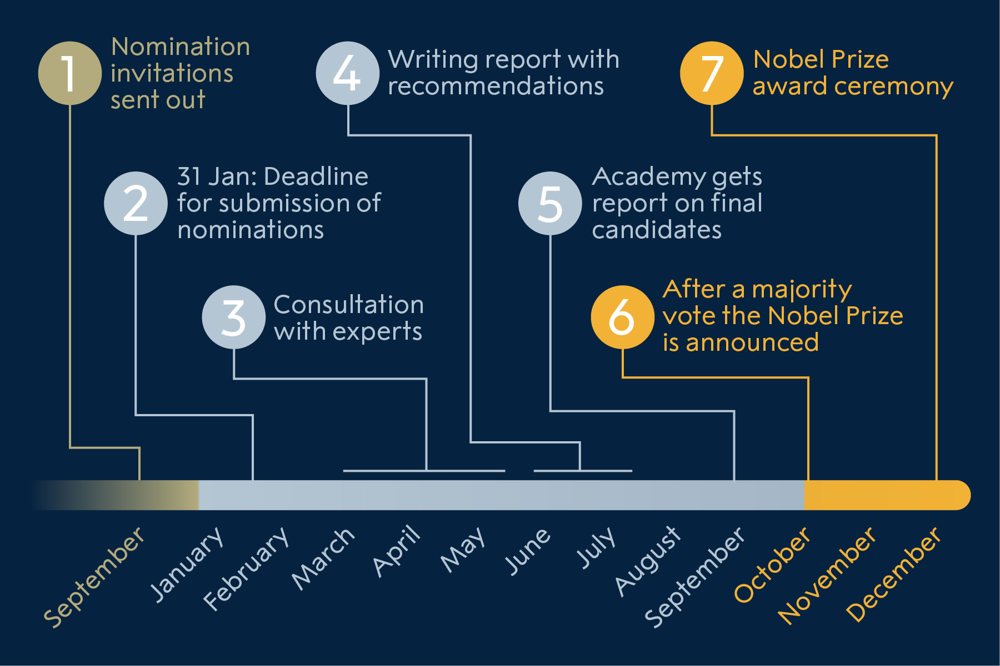

Nomination and selection of chemistry laureates
Nomination to the Nobel Prize in Chemistry is by invitation only. The names of the nominees and other information about the nominations cannot be revealed until 50 years later.
Process of nomination and selection
The Nobel Committee for Chemistry sends confidential forms to persons who are competent and qualified to nominate.
Qualified nominators
The right to submit proposals for the award of a Nobel Prize in Chemistry shall, by statute, be enjoyed by:
- Swedish and foreign members of the Royal Swedish Academy of Sciences;
- Members of the Nobel Committees for Chemistry and Physics;
- Nobel Prize laureates in chemistry and physics;
- Permanent professors in the sciences of Chemistry at the universities and institutes of technology of Sweden, Denmark, Finland, Iceland and Norway, and Karolinska Institutet, Stockholm;
- Holders of corresponding chairs in at least six universities or university colleges selected by the Academy of Sciences with a view to ensuring the appropriate distribution over the different countries and their centers of learning;
- Other scientists from whom the Academy may see fit to invite proposals.
Decisions as to the selection of the teachers and scientists referred to in paragraphs 5 and 6 above shall be taken each year before the end of the month of September
Selection of Nobel Prize laureates
The Royal Swedish Academy of Sciences is responsible for the selection of the Nobel Prize laureates in Chemistry from among the candidates recommended by the Nobel Committee for Chemistry. The Nobel Committee is the working body that screens the nominations and selects the final candidates. It consists of five members, but for many years the Committee has also adjunct members with the same voting rights as members.
Who is eligible for the Nobel Prize in Chemistry?
The candidates eligible for the Chemistry Prize are those nominated by qualified persons who have received an invitation from the Nobel Committee to submit names for consideration. No one can nominate himself or herself.
How are the Nobel Prize laureates selected?
The nomination process for Nobel Prize laureates in Chemistry Ill. N. ElmehedBelow is a brief description of the process involved in selecting the Nobel Prize laureates in Chemistry.
September-October – Nomination forms are sent out. The Nobel Committee sends out confidential forms to around 3,000 people — selected professors at universities around the world, Nobel Prize laureates in physics and chemistry, and members of the Royal Swedish Academy of Sciences, among others.
February – Deadline for submission of nominations. The completed nomination forms must reach the Nobel Committee no later than 31 January of the following year. The Committee screens the nominations and selects the preliminary candidates. About 250–350 scientists are nominated as several nominators often submit the same name.
March-May – Consultation with experts. The Nobel Committee evaluates preliminary candidates, advised by specially appointed experts for their assessment of the candidates’ work.
June-August – Writing of the report. The Nobel Committee puts together a report with recommendations to be submitted to the Academy. The report is signed by all members of the Committee.
September – Committee submits recommendations. The Nobel Committee submits its report with recommendations on the final candidates to the members of the Academy. The report is discussed at two meetings of the Chemistry Section of the Academy.
October – Nobel Prize laureates are chosen. In early October, the Academy selects the Nobel Prize laureates in chemistry through a majority vote. The decision is final and without appeal. The names of the Nobel Prize laureates are then announced.
December – Nobel Prize laureates receive their Prize. The Nobel Prize Award Ceremony takes place on 10 December in Stockholm, where the Nobel Prize laureates receive their Nobel Prize, which consists of a Nobel Prize medal and diploma, and a document confirming the prize amount.
Are the nominations made public?
The statutes of the Nobel Foundation restrict disclosure of information about the nominations, whether publicly or privately, for 50 years. The restriction concerns the nominees and nominators, as well as investigations and opinions related to the award of a prize.
Search the nomination databaseContact the Royal Swedish Academy of Sciences
Read more about how the Nobel Prize laureates are nominated:
Nomination of the physics laureatesNomination of the chemistry laureates
Nomination of the medicine laureates
Nomination of the literature laureates
Nomination of the peace laureates